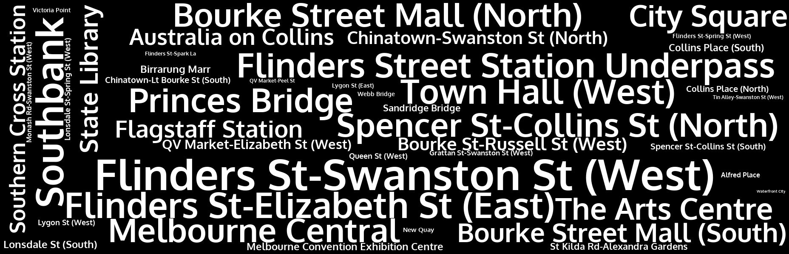

{% extends "adminlte/base.html" %}
{% import "adminlte/layout.html" as layout with context %}
{% import "adminlte/widgets.html" as widgets with context %}
{% block navbar %}
{%- endblock navbar %}
{% block sidebar -%}
{%- endblock sidebar %}
{% block content_header -%}
Melbourne Pedestrian Statistics
Melbourne City Council Pedestrian Data Set
{%- endblock content_header %}
{% block content -%}
{{ widgets.small_box(
bgcolor="bg-aqua",
header=most_pop_overall[0].count,
body="Most Pedestrians for 2017: " + most_pop_overall[0].sensor_name,
footerlink="#"
) }}
{{ widgets.small_box(
bgcolor="bg-green",
header=most_pop_day[0].count,
body="Most Popular Day: " + most_pop_day[0].day,
footerlink="#"
) }}
{{ widgets.small_box(
bgcolor="bg-yellow",
header=most_pop_time[0].count,
body="Most Popular Time: " + most_pop_time[0].time,
footerlink="#"
) }}
{{ widgets.small_box(
bgcolor="bg-red",
header=most_pop_time[0].count,
body="Most Popular Month: " + most_pop_month[0].month,
footerlink="#"
) }}
Word Map

Google Map
{%- endblock content %}